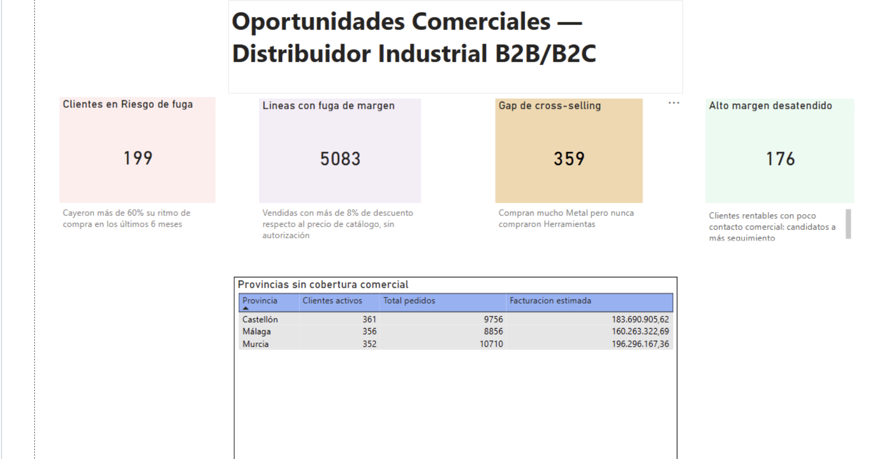

Caso · Python · Power Query · SQL Server · Power BI
Dónde pierde margen un distribuidor industrial
Limpié ~100.000 líneas de pedido con los errores típicos de los datos reales y las convertí en cinco oportunidades concretas para el equipo comercial.
La pregunta
¿Dónde está dejando dinero un distribuidor B2B, y qué puede hacer el equipo comercial al respecto?
No alcanzaba con describir qué se vendió. El objetivo era señalar acciones: a qué clientes llamar, qué ofrecerles y dónde falta cobertura.
Los datos
Un distribuidor ficticio de metal, plástico, componentes, herramientas y packaging. Los datos son sintéticos porque la información comercial real de una empresa no se publica, pero los diseñé para que tuvieran los mismos problemas que aparecen en datos reales:
- fechas en formatos mezclados;
- decimales en formato español e inglés en la misma columna (
426.96y232,29); - duplicados, categorías mal escritas, valores vacíos y errores de captura.
El enfoque
Antes de confiar en un solo número, los datos pasaron por dos etapas de limpieza:
- Excel / Power Query: normalicé nombres, provincias, categorías y NIF, y convertí los decimales mixtos celda por celda, sin forzar un único formato regional.
- SQL Server: audité cada columna numérica (mínimo, máximo y promedio contra los rangos esperados) y cada columna de texto (variantes con
GROUP BYyCOUNT), y corregí errores de importación que habrían invalidado el análisis.
El tablero de Power BI lee directamente de vistas SQL, no de medidas recalculadas: así los números del tablero son exactamente los mismos que los de las consultas.
Lo que encontré
-
199
clientes en riesgo de fuga
Bajaron su actividad más de un 60% en los últimos 6 meses respecto de su promedio histórico. Todavía hay margen para contactarlos antes de perderlos.
01_churn.sql
-
176
clientes rentables con poco seguimiento
Compran poco (entre 3 y 25 pedidos), pero al menos el 60% de lo que compran tiene un margen superior al 35%.
02_alto_margen_desatendido.sql
-
359
clientes que compran Metal y nunca Herramientas
Dos categorías que en el resto de la base suelen ir juntas: una venta cruzada que nadie les está ofreciendo.
03_cross_selling.sql
-
5.083
líneas de pedido con descuentos no autorizados
Cerca del 5% del total, con rebajas de entre el 8% y el 25% sobre el precio de catálogo y sin un patrón de volumen que las justifique.
04_fuga_margen.sql
-
3
provincias con clientes activos y ningún comercial
Murcia, Castellón y Málaga suman más de 1.000 clientes con pedidos reales (352, 361 y 356) sin cobertura comercial asignada.
05_whitespace_regional.sql

Qué haría distinto
El análisis usa precio de catálogo y margen estándar por producto, no costos reales. Por eso la "fuga de margen" mide cuánto se aleja cada venta del precio de lista, no la pérdida exacta en euros. Con costos reales por producto, el mismo enfoque calcularía el impacto en el margen neto.